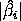
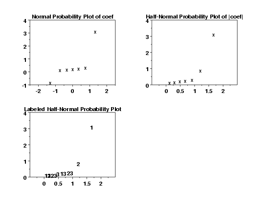
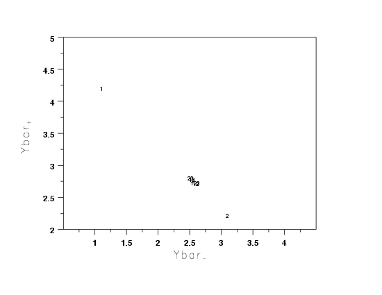

5.
Process Improvement
5.6.
Case Studies
5.6.1.
Eddy Current Probe Sensitivity Case Study
5.6.1.8.
|
Important Factors and Parsimonious Prediction
|
|
|
Identify Important Factors
|
The two problems discussed in the previous section (important
factors and a parsimonious model) will be handled in parallel.
Determination of one will yield the other. In regard to the
"important factors", our immediate goal is to take the full
subset of 7 main effects and interactions and extract a subset
which we will declare as "important", with the complementary
subset being "unimportant".
Seven possible criteria
are given in the discussion of the Yates technique.
|
|
Criterion for Including Terms in the Model
|
Of the seven possible criterion, we applied the following five
in this case study.
- Effects: Engineering
Significance
- Effects: Order of Magnitude
- Effects: Statistical
Significance
- Effects: Probability Plots
- Averages: Youden Plot
The last section summarizes the
conclusions based on all of
the applied criterion.
|
|
Effects: Engineering
Significance
|
For this criterion, we declare a factor as "important" if the effect
is greater than some a priori declared engineering difference. In
the absence of an a priori difference, a good rough rule for
the minimum engineering significant
is to keep only those factors whose effect is greater than, say,
10% of the current production average. In this case, the overall
mean is 2.66, so a reasonable assumption is that the average detector
has a sensitivity of about 2.5 ohms. This suggests that we would
declare all factors whose effect is greater than 10% of 2.5 ohms = 0.25
ohm to be significant from an engineering point of view.
The minimum engineering significant difference criterion supports
keeping two terms: X1 (3.10250) and X2 (-.86750).
|
|
Effects: Order of
Magnitude
|
For this criterion, we exclude any factor that is less than
10% of the maximun effect size. For the current case study, the
largest effect is from factor 1 (3.10250 ohms), and so 10% of that
is 0.31 ohms.
The order of magnitude criterion supports keeping two terms:
X1 (3.10250) and X2 (-.86750). A third term, X2*X3 (.29750), is
just under the cut-off.
|
|
Effects: Statistical
Significance
|
For the current case study:
- the engineer did not know
 ; ;
- the design (a 23 full factorial) did not
have replication;
- ignoring 3-term interactions and higher leads to an estimate
of
based on omitting only a single term: the X1*X2*X3 interaction.
Thus for this current case study, if one assumes that the 3-term
interaction is nil and hence represents a single drawing from a
population centered at zero, then an estimate of the standard
deviation of the effect is simply the effect itself (0.1425 from
the Yates table).
Two such effect standard deviations is 0.2850. This rule becomes
to keep all
 > 0.2850. This results in
keeping three terms: X1 (3.10250), X2 (-.86750), and X1*X2 (.29750).
|
|
Normal Probablity
Plot of Effects and Halfnormal Probability Plot of Effects
|
The following plot shows the
normal probability plot
of the effects and the halfnormal probability plot of the absolute
value of the effects.

For the case study at hand, both probability plots clearly show
two factors displaced off the line, and from the third plot (with
factor tags included), we see that those two factors are factor 1
and factor 2. All of the remaining five effects are behaving like
random drawings from a normal distribution centered at zero, and
so are deemed to be statistically insignificant. In conclusion,
this rule keeps two factors: X1 (3.10250) and X2 (-.86750).
|
|
Youden Plot of
Effects
|
The following is the Youden
plot of the effects.

For the case study at hand, the Youden plot clearly shows a cluster
of points near the grand average (2.65875) with two displaced
points above (factor 1) and below (factor 2). Based on the Youden
plot, we thus conclude to keep two factors: X1 (3.10250) and
X2 (-.86750).
|
|
Conclusions
|
In summary, we used five criterion for specifying "important" factors
yielded the following:
- Effects, Engineering Significant:
|
X1 X2
|
- Effects, Order of Magnitude:
|
X1 X2
|
- Effects, Statistically Significant:
|
X1 X2 X2*X3
|
- Effects, Probability Plots:
|
X1 X2
|
- Averages, Youden Plot:
|
X1 X2
|
Scanning all of the above, we thus declare the following consensus:
- Important Factors: X1 and X2
- Parsimonious Prediction Equation:
(with a residual standard deviation of .30429 ohms)
|